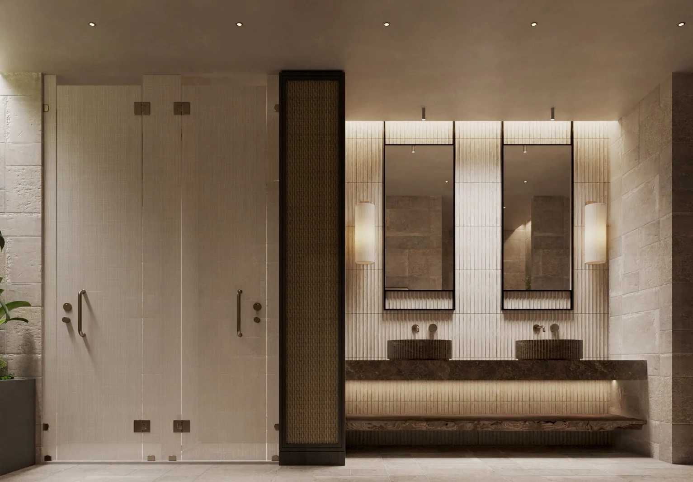
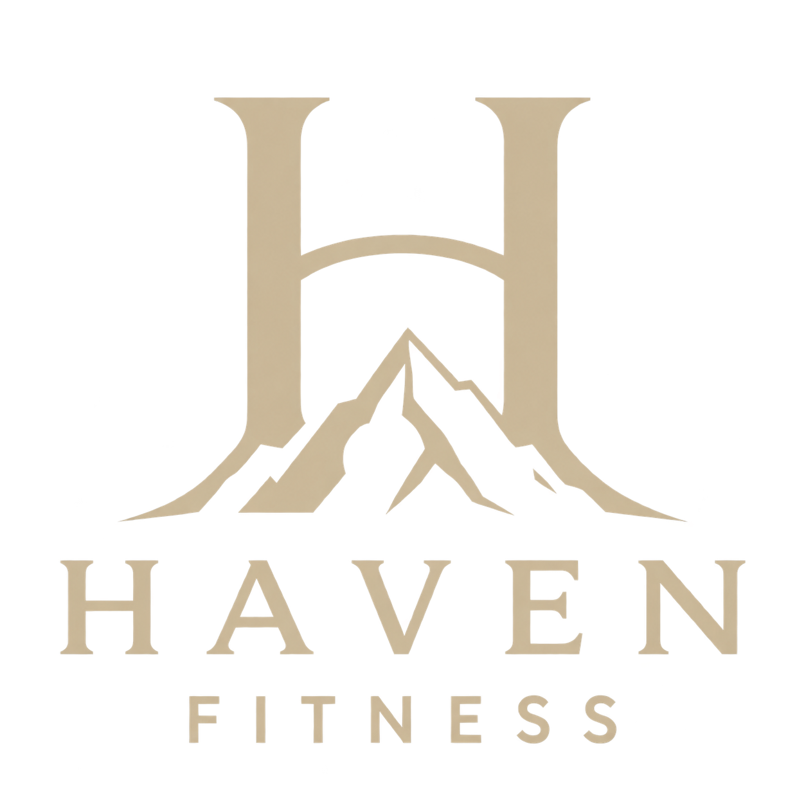
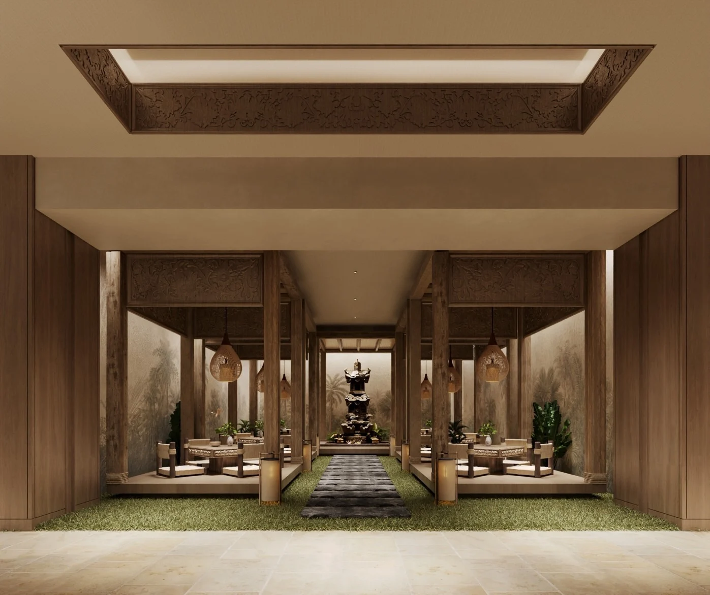
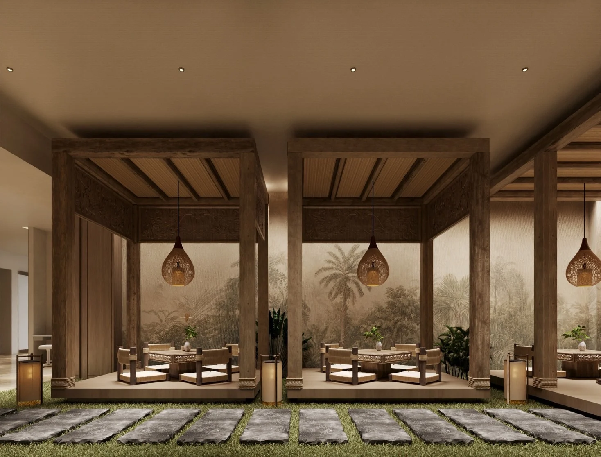

01 / RETURN TO YOURSELF
RESTORE修復
運動結束，不代表體驗結束。
讓身體慢下來，重新回到自己。


這不是另一間健身房。
這是每天都能回來的身心聖域。
以峇里島的自然靈感，將運動、空間與生活相連。
在高雄仁武，留一點時間，好好對待自己。

THE SANCTUARY
讓感官放慢，讓自己回來。
木質・植栽・暖光
一縷香氣，切換心境
將城市的喧鬧留在門外
石材的靜，木質的暖
此刻，回到自己
02 / THE HAVEN EXPERIENCE
修復自己，重新律動，找到歸屬。
03 / OUR SPACES
每個角落，都為從容而留。
探索 HAVEN 的空間設計。
以上皆為空間設計示意圖，實際配置與設施以正式公告為準。
04 / MOVE YOUR WAY
用適合自己的方式，讓運動回到生活。
依照自己的時間與步調安排訓練，讓規律運動自然融入日常生活。
由教練協助釐清運動目標，提供動作指導與訓練建議，找到適合自己的練習方式。
跟著老師的引導，與夥伴一起運動，在團體的節奏中享受練習的樂趣。
透過呼吸、伸展與核心控制，練習身體的穩定與協調，細細感受每一次動作。
以貼近日常活動的動作練習力量、平衡與協調，讓訓練連結生活中的身體運用。
各項服務費用、課表與預約方式待公布。
05 / YOUR DAILY RITUAL
不必等到假期。
每天，都可以有一段自己的時間。
在一天開始前，
先與自己相處。
把忙碌暫時放下，
找回自己的步調。
把城市留在門外，
把自己帶回來。
不用急著離開，
讓從容成為日常。
以上為生活情境提案。預售營業時間：10:00-22:00。
06 / MEMBERSHIP
07 / EARLY BIRD OFFER
前500名
入會費０元
留下聯絡方式，了解早鳥預售優惠。
完成登記後，將由專人與你聯繫。
登記不代表完成入會或保留優惠名額。
08 / FIND YOUR HAVEN
HAVEN FITNESS · 高雄仁武